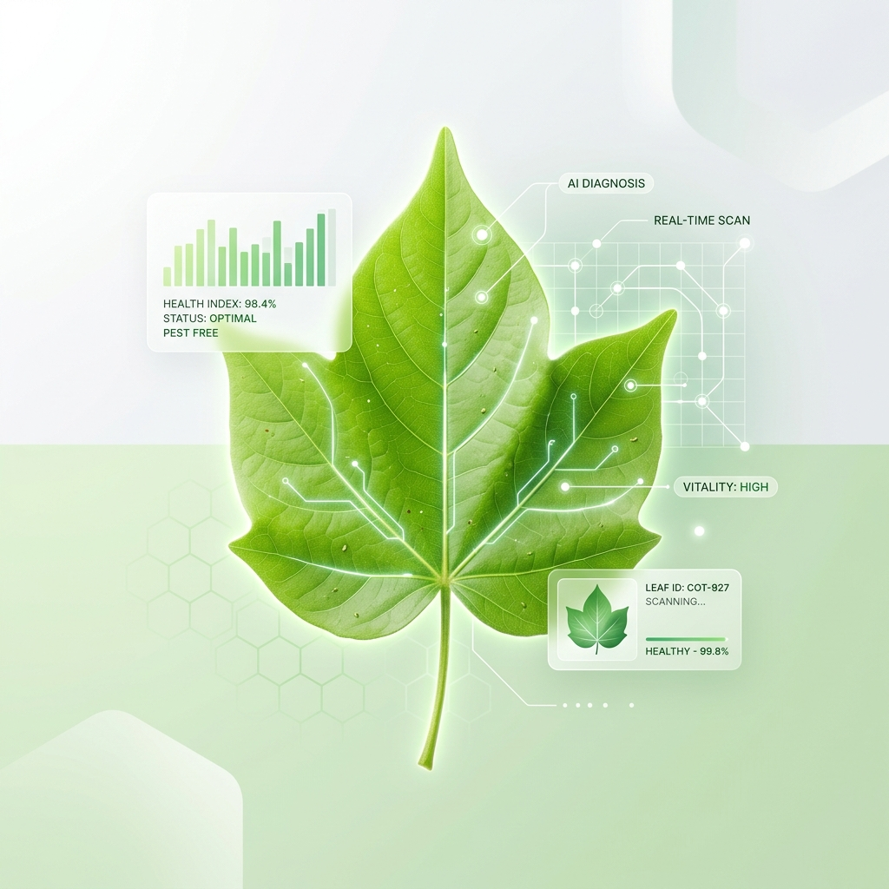

I'm a 1st Year AI & ML Specialist based in Jind, Haryana. I build intelligent solutions blending software and hardware.
A glimpse into my background and what drives me.
Hello! I am a 1st year AI & ML Specialist with a profound passion for Machine Learning. I love designing intelligent algorithms that solve real-world problems and creating efficient systems bridging the gap between theoretical AI and concrete hardware solutions.
When I'm not training models or working with IoT devices, you can find me heavily involved in physical activities. I hold a strong passion for sports and have a competitive background in:
Continuously validating my skills out-of-bounds with industry-recognized tech badges:
My academic track record across the years.
Currently specializing in Artificial Intelligence and Machine Learning algorithms.
Foundations in high school leading into technology fields.
Early academic excellence.
Real-world applications of AI and IoT to solve critical agricultural challenges.

A sophisticated machine learning solution acting as an early pest detection system designed specifically for the protection of cotton plants. Leveraging IoT data alongside predictive AI models to alert farmers proactively.
The companion hardware project applying the IoT concept into a tangible prototype. Integrates sensors and microcontrollers deployed directly into the field for live, at-the-source environmental and physical analysis.